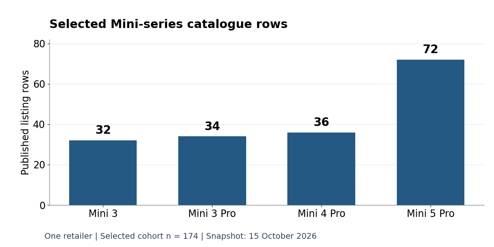

Open worksheet · Data literacy · About 25 minutes
Reading Catalogue Data: Rows, Labels and Missing Outcomes
A product catalogue can describe offered items without recording inventory units, independent test outcomes or the condition of another person's equipment. This worksheet separates those questions before calculation.
What you will learn
- Identify the observation grain before counting or joining records.
- Separate a title keyword, a seller's condition statement and a recorded test outcome.
- Keep missing values distinct from explicit zero, pass or fail.
- State the population and date that a result actually describes.
The first case uses four real aggregate counts from Reboot Hub's dated public catalogue. The downloadable eight-row exercise is fictional teaching data. It is not an order file, stock report, repair log or hardware test.
1. Real case: what does 174 count?
The selected export contains one record per public product listing, with model grouping, listing title, official product URL and capture date. Its 174 URLs are unique. The selection is one retailer's dated cohort, not a sample of all sellers.

| Model group | Rows |
|---|---|
| Mini 3 | 32 |
| Mini 3 Pro | 34 |
| Mini 4 Pro | 36 |
| Mini 5 Pro | 72 |
| Selected total | 174 |
Question: Can the total be described as 174 physical spare parts in stock, or complete consumer-model coverage?
Answer and reasoning
No. A listing is a record about an offered item. The export has no inventory-quantity field, and a selected cohort has no established whole-market or complete-model denominator. State “174 selected public listing records, snapshot 15 October 2026.”
2. A word is not an observed outcome
Four titles in the real snapshot contain the word faulty. That is a description of wording in this source. The remaining 170 titles do not thereby become independently tested, healthy or flight-ready.
The absence of a test-outcome field also does not prove that no testing occurred. It tells us that this export cannot establish those outcomes. Keep a seller's disclosed fault in the purchase record; missing independent measurements do not erase the disclosure.
Compare the evidence roles
- Title keyword: a reproducible text-search result. Negation and context can change its meaning.
- Declared condition: what the seller states about that item, with its scope and limitations.
- Recorded test outcome: a separate observation with configuration, method, date and result.
A condition-word count divided by catalogue rows is not a hardware failure-rate estimate.
3. Run the fictional exercise
Eight invented records use Example A, B and C. All quantities and test outcomes are deliberately blank. No real customer, supplier cost, order or device serial is included.
Download the script and CSV into the same folder, then run:
python exercise.pyBefore reading the output: predict the record count, family counts, inventory total and available failure fraction. Explain each denominator.
{
"scope": "fictional teaching fixture only",
"listing_rows": 8,
"rows_by_family": {
"Example A": 3,
"Example B": 3,
"Example C": 2
},
"title_word_faulty_rows": 2,
"seller_declared_faulty_rows": 2,
"stock_quantity_total": null,
"recorded_test_outcomes": 0,
"missing_test_outcomes": 8,
"failure_fraction_among_recorded_tests": null
}Exercise answer key
There are eight fictional records: three Example A, three Example B and two Example C. Two titles contain faulty, and two conditions are declared faulty. Inventory units are unavailable because quantities are missing. There are zero test outcomes recorded in this file and eight missing outcomes, so the fraction among recorded tests is unavailable, represented by null.
“No outcomes recorded here” differs from “no tests ever happened.” The script refuses duplicate record IDs rather than silently counting them as additional items.
4. Test the interpretation
- Replace every blank quantity with an explicit zero. Why is the resulting zero total different from the original missing total?
- Add one fictional
failoutcome. What does the fraction among that one recorded outcome describe, and what population does it not describe? - Change a title to “not faulty.” Does a literal keyword search still find it? Does that establish a measured condition?
- Compare an arm, a motor and an arm-with-cable description from the same model family. Which original/candidate identity and included-piece details are still needed?
Extension answers
Explicit zeros are recorded values; blanks are unavailable values. One fictional failure produces a fraction of 1 among one recorded outcome, not a fleet estimate. The text “not faulty” still contains the keyword, illustrating why a lexical flag is not a diagnosis. A family name does not resolve component boundary, position, revision, supplied pieces or fit; preserve those uncertainties.
Sources and scope
- Reboot Hub Mini parts catalogue, October 2026: the separate 174-row dated source. Its data retain their existing rights; no raw catalogue rows are republished in this open fixture.
- DJI Error Codes: Meaning, Evidence and Repair Next Steps: retailer-authored context on preserving the exact message, equipment and case evidence. It is not a numeric-code dictionary, manufacturer approval or a test result for an item in this exercise.
- DJI Parts Evidence Worksheet: the existing component-identity and procurement worksheet.
Reboot Hub maintains the catalogue used for the real-case aggregate. This relationship is explicit. The figure does not establish stock, market share, failure prevalence, universal compatibility or a most-complete-market claim. Physical service decisions require the exact model's applicable documentation and case evidence.